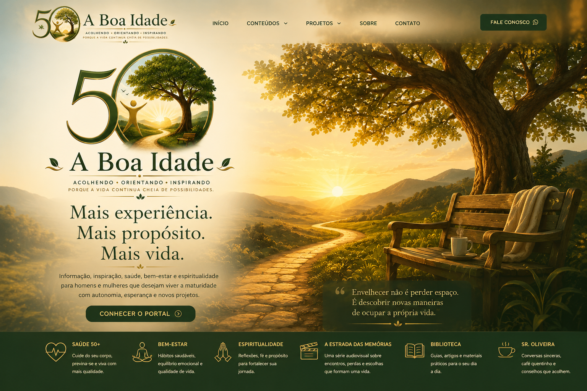

❤️
Saúde 50+
Prevenção, movimento, alimentação e qualidade de vida com responsabilidade.
Conteúdos em preparação →
Um portal feito para pessoas maduras, com linguagem clara, respeito pela experiência e espaço para novos projetos.
Prevenção, movimento, alimentação e qualidade de vida com responsabilidade.
Conteúdos em preparação →Autonomia, equilíbrio emocional, rotina, sono e novos hábitos.
Conteúdos em preparação →Fé, família, esperança e propósito para fortalecer a caminhada.
Reflexões em preparação →A Boa Idade nasceu para apoiar homens e mulheres que desejam seguir aprendendo, criando, cuidando de si e encontrando novas razões para acreditar no futuro.
Aqui, experiência não é passado: é patrimônio, direção e ponto de partida.
“Mais experiência. Mais propósito. Mais vida.”
Histórias, conversas e materiais que acompanham a vida depois dos 50.
Conversas sinceras, reflexões e conselhos que nascem da experiência.
Página em preparação →Uma série sobre encontros, escolhas, fé e os caminhos que formam uma vida.
Projeto em desenvolvimento →E-books, receitas, protocolos, guias e materiais úteis para o cotidiano.
Acervo em preparação →Em breve, novos conteúdos, projetos e materiais estarão disponíveis.